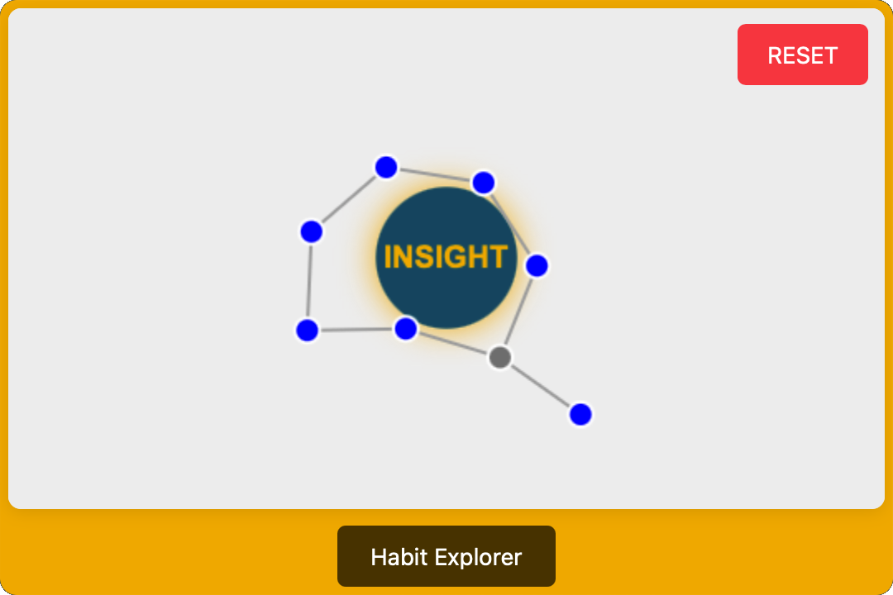

Mental Habit: Connected Thinking in Engineering Education
Connected thinking can become a mental habit. While mental habits are widely recognized as different than mindset, authors have linked mental habits and the development of entrepreneurial mindset. See Lynch & Corbett, Momenipour & O’Neil.
As an illustration of connected thinking try the Connections Mini-Game. The idea was inspired by Gary Klein’s work on how we connect ideas to capture an insight. Klein’s work on insight, particularly in his book Seeing What Others Don’t: The Remarkable Ways We Gain Insights, emphasizes that insights often arise not from sudden flashes of brilliance but from connecting fragments of information in novel ways. His central thesis is that insight comes from recognizing contradictions, removing faulty assumptions, or spotting coincidences that others overlook. This process relies heavily on making connections—linking disparate cues, experiences, or patterns to form a new understanding. Klein argues that rather than waiting passively for insight, we can create the conditions for it by staying curious, noticing anomalies, and encouraging unconventional thinking.

1. Description and Theoretical Framework
Definition and Importance
Connected thinking is a mental habit characterized by the ability to perceive, analyze, and leverage relationships between concepts, systems, and disciplines. It involves recognizing patterns, understanding second and third-order effects, and creating mental models that represent complex systems and their interconnections. Connected thinking goes beyond linear cause-and-effect reasoning to embrace a more holistic view of engineering challenges.
For engineers, connected thinking is essential because engineering problems rarely exist in isolation. As engineering systems become increasingly complex and interdisciplinary, the ability to connect disparate concepts, anticipate cascading effects, and consider multiple perspectives becomes critical for effective problem-solving. Connected thinking enables engineers to move beyond reductionist approaches that might solve immediate problems but create unforeseen consequences.
According to systems thinking theorists, connected thinking is particularly valuable because “in complex systems, higher order effects tend to dominate” (Hacker News, 2020). This insight highlights how the ability to anticipate and understand second and third-order relationships can be crucial in engineering contexts where simplistic first-order thinking might lead to suboptimal or even harmful solutions.
The authors of
Theoretical Framework: The Dimensions of Connected Thinking
Connected thinking in engineering can be conceptualized across three primary dimensions:
-
Relational Dimension: The ability to identify and understand relationships between concepts, components, and systems.
- Concept-to-concept connections (how ideas relate to each other)
- Component-to-component connections (how parts interact within a system)
- System-to-system connections (how different systems influence each other)
- Discipline-to-discipline connections (how knowledge from different fields relates)
-
Temporal Dimension: The ability to understand how systems and relationships evolve over time.
- First-order effects (immediate consequences)
- Second-order effects (consequences of the first-order effects)
- Third-order effects (consequences of the second-order effects)
- Feedback loops (how effects cycle back to influence causes)
-
Representational Dimension: The ability to create and use models that capture complex relationships.
- Mental models (internal cognitive frameworks for understanding systems)
- Concept maps (external visual representations of relationships between ideas)
- System diagrams (representations of components and their interactions)
- Causal loop diagrams (representations of feedback processes)
This framework provides a structured way to understand connected thinking as a habit that can be systematically developed through engineering education. It recognizes that connected thinking involves both cognitive processes (how engineers perceive and analyze relationships) and representational tools (how they externalize and communicate those relationships to others).
2. Engineering Education Applications
Detailed Implementation: The Interconnected Systems Analysis Project
Overview
The Interconnected Systems Analysis Project is a semester-long learning experience designed for third-year civil engineering students focused on urban infrastructure. This project develops connected thinking by requiring students to analyze the complex interdependencies between water, energy, and transportation systems in a real urban environment. Students create increasingly sophisticated models of system interactions and use these models to evaluate potential infrastructure interventions, with particular attention to second and third-order effects that might be overlooked in traditional siloed approaches.
Technical Setup and Materials
Physical and Digital Resources:
- Geographic Information System (GIS) software for mapping infrastructure systems
- System dynamics modeling software (e.g., STELLA or Vensim)
- Data visualization tools (e.g., Tableau)
- Municipal infrastructure data sets
- Historical performance data for existing systems
- Demographic and socioeconomic data for the study area
- Climate projection data for the region
Reference Materials:
- Conceptual frameworks for urban metabolism
- Case studies of infrastructure interdependencies
- Methodologies for multi-criteria decision analysis
- Templates for system mapping and connection analysis
- Rubrics for evaluating the depth and quality of connected thinking
Expert Access:
- Municipal engineers responsible for different infrastructure domains
- Urban planners familiar with the study area
- Community representatives who can speak to lived experiences
- Faculty with expertise in various infrastructure systems
Implementation Process
Phase 1: System Component Identification and Mapping (3 weeks)
-
Students are assigned to teams of 4-5 members, with each team focusing on a specific neighborhood within the urban area.
-
Teams begin by mapping the three core infrastructure systems (water, energy, transportation) in their assigned area:
- Water infrastructure (supply, treatment, distribution, stormwater management)
- Energy infrastructure (generation, transmission, distribution)
- Transportation infrastructure (roads, public transit, bike paths, pedestrian ways)
-
For each system, students identify:
- Key components and their functions
- Service areas and capacities
- Critical nodes and potential vulnerabilities
- Performance metrics and historical data
-
Students create initial GIS maps of each system, with layers that can be toggled to visualize different aspects of the infrastructure.
-
Teams present their preliminary system maps to the class, receiving feedback on the comprehensiveness of their component identification.
Phase 2: First-Order Connection Analysis (3 weeks)
-
Students analyze the direct connections between systems in their normal operations:
- Energy required for water pumping and treatment
- Water required for energy generation
- Transportation networks needed for maintaining both systems
- Shared rights-of-way and physical co-location of infrastructure
-
Teams identify key performance interdependencies, such as:
- How energy costs affect water delivery costs
- How transportation congestion affects infrastructure maintenance
- How water scarcity might affect energy generation
-
Students create connection matrices that quantify the strength and nature of these first-order relationships.
-
Teams develop initial concept maps showing these direct relationships, using standardized notation for different types of connections.
-
Faculty guide discussions on the importance of these connections for infrastructure planning and management.
Phase 3: Second and Third-Order Effects Analysis (4 weeks)
-
Students extend their analysis to identify less obvious connections and cascading effects:
- How water conservation might affect energy consumption and transportation patterns
- How transportation electrification might affect both energy and water systems
- How climate change impacts on one system might cascade to others
-
Teams develop causal loop diagrams that show feedback relationships between systems, identifying:
- Reinforcing loops (where changes amplify over time)
- Balancing loops (where systems self-regulate)
- Time delays (where effects are not immediately apparent)
-
Students use system dynamics modeling to simulate these relationships over time, observing how:
- Short-term interventions might have unexpected long-term consequences
- Small changes in one system might produce large effects in others
- Optimal solutions might differ depending on the time horizon considered
-
Teams identify potential tipping points and thresholds where gradual changes might lead to sudden system transformations.
-
Students create “connection trees” that map out chains of cause and effect across multiple systems and time scales.
Phase 4: Intervention Design and Evaluation (4 weeks)
-
Each team identifies a significant infrastructure challenge in their area (e.g., flooding, energy reliability, transit access) and proposes three potential interventions.
-
For each intervention, students use their connected thinking models to:
- Predict first-order impacts on the target system
- Analyze second-order impacts on connected systems
- Explore third-order impacts and potential unintended consequences
- Identify feedback effects that might amplify or dampen the intervention’s effectiveness
-
Teams evaluate their interventions using multi-criteria decision analysis that explicitly considers:
- Performance across all affected systems
- Short, medium, and long-term impacts
- Distributional effects across different communities
- Resilience to different future scenarios
-
Students refine their system models based on this analysis, creating an integrated representation that captures the full complexity of system interdependencies.
-
Teams prepare final reports and presentations that explicitly highlight:
- Their evolving understanding of system connections
- How considering higher-order effects changed their evaluation of interventions
- The limitations of their models and areas of uncertainty
- How connected thinking led to different conclusions than traditional siloed analysis
Learning Outcomes and Habit Development
This implementation develops several key engineering competencies:
- Systems analysis: Students develop the ability to analyze complex urban infrastructure systems
- Interdisciplinary integration: Students learn to bridge traditionally separate domains of civil engineering
- Dynamic modeling: Students gain experience with tools for representing and simulating change over time
- Multi-criteria decision-making: Students practice evaluating trade-offs across diverse objectives and stakeholders
Most importantly, the experience systematically cultivates connected thinking as a habit by:
- Providing structured practice in identifying relationships at increasing levels of complexity
- Creating a learning environment where students directly experience the limitations of siloed thinking
- Demonstrating the practical value of understanding higher-order effects in engineering decision-making
- Developing fluency with representational tools that make complex connections visible and analyzable
Assessment data from implementations of similar projects shows that students initially struggle to move beyond first-order thinking but gradually develop more sophisticated mental models that acknowledge system complexity. By the end of the semester, most teams demonstrate the ability to anticipate unexpected consequences and leverage system interdependencies in their design proposals.
3. Assessment and Measurement
Indicators of Connected Thinking as a Mental Habit
Observable behaviors that indicate connected thinking has become habitual in engineering students include:
- Spontaneously identifying relationships between concepts from different courses or disciplines
- Asking questions about second and third-order effects without prompting
- Creating concept maps or diagrams to think through complex problems
- Considering feedback loops and system dynamics in problem analysis
- Looking beyond immediate technical solutions to broader system implications
- Identifying potential unintended consequences of proposed interventions
- Drawing analogies between seemingly different engineering contexts
- Recognizing patterns across diverse engineering problems
- Communicating effectively about complex systems and their behaviors
- Proposing interventions that leverage system interconnections rather than fighting them
Assessment Methods
1. Concept Map Analysis Concept maps created by students can be analyzed for indicators of connected thinking, including the number of valid connections identified, the hierarchical structure of the map, and the cross-links between different branches (Academia.edu, 2014). Research shows that concept maps provide “an effective way to get students to interact with content to make connections at a more sophisticated level” (ASU Learning and Teaching Hub, 2024).
2. System Model Evaluation Students’ ability to create accurate and useful models of complex systems can be assessed using rubrics that evaluate both the structure of the models and their utility for predicting system behavior. These evaluations can focus on whether students appropriately capture key relationships, feedback loops, and time delays.
3. Second-Order Thinking Exercises Specific exercises can be designed to test students’ ability to identify second and third-order effects. For example, students might be presented with a case study of an engineering intervention and asked to trace its potential cascading effects across multiple systems and time scales.
4. Connection Identification Tests Students can be given sets of seemingly unrelated engineering concepts and asked to identify valid connections between them. The quality, quantity, and creativity of the connections can provide insight into the development of connected thinking habits.
5. Reflection Analysis Students’ reflective writings about their problem-solving processes can be analyzed for evidence of connected thinking, such as references to system relationships, consideration of multiple time horizons, and awareness of potential unintended consequences.
6. Design Critique Observations During design reviews or critiques, observers can document instances where students demonstrate connected thinking in their presentations or responses to questions, providing a more naturalistic assessment of this habit in action.
4. Challenges and Considerations
Potential Barriers
1. Disciplinary Silos in Engineering Education Traditional engineering education often organizes knowledge into discrete courses with limited integration, making it difficult for students to develop the habit of connected thinking across domains. As noted in research, helping students understand “the overall conceptual structure of the course” and seeing connections to other areas of curriculum remains challenging (ResearchGate, 2018).
2. Limited Tools for Representing Complex Systems While there are various tools for representing relationships (concept maps, system diagrams, etc.), students may not have sufficient practice with these tools to use them effectively for complex engineering problems. Learning to create effective representations is itself a skill that requires significant time and guidance.
3. Assessment Constraints Traditional engineering assessments often focus on discrete technical knowledge rather than connected thinking, potentially sending mixed messages about what is valued. Developing valid and reliable methods for assessing connected thinking remains challenging.
4. Time Pressure in Curriculum The habit of connected thinking requires time for reflection and exploration, which may be at odds with packed engineering curricula focused on covering technical content. Faculty may feel they cannot “afford” the time needed for students to develop this habit properly.
5. Comfort with Abstraction Connected thinking often involves abstract concepts and relationships that some students find challenging. Different cognitive preferences and learning styles may affect how readily students develop this habit.
Mitigation Strategies
1. Integrated Problem-Based Learning Creating learning experiences that intentionally span traditional disciplinary boundaries can help students develop the habit of connected thinking. Problem-based learning approaches that address complex, real-world challenges naturally require students to make connections across domains.
2. Explicit Concept Mapping Instruction Providing direct instruction in concept mapping and other representational tools can help students develop the skills needed for external representation of their connected thinking. Research has shown that “concept maps help students to learn in a non-linear way promoting out-of-the-box thinking” (ResearchGate, 2018).
3. Scaffolded Practice Starting with simpler connection exercises and gradually increasing complexity can help students build confidence in their connected thinking abilities. Providing templates and examples of well-constructed concept maps or system diagrams can give students models to emulate.
4. Faculty Development Helping engineering faculty recognize the value of connected thinking and develop strategies for fostering it in their courses can create more consistent messaging about its importance. Faculty workshops on concept mapping and systems thinking can provide concrete tools for implementation.
5. Authentic Assessment Design Developing assessments that explicitly value and reward connected thinking can help align curriculum, pedagogy, and evaluation. Rubrics that include criteria for the quality and depth of connections identified can make expectations clear to students.
5. References
Lynch, M. P., & Corbett, A. C. (2021). Entrepreneurial mindset shift and the role of cycles of learning. Journal of Small Business Management, 61(1), 80–101. https://doi.org/10.1080/00472778.2021.1924381
Momenipour, Amirmasoud, and Jennifer A. O’Neil. “Habit Formation and Entrepreneurially-Minded Learning (EML) in Developing the User-Centered Design Mindset.” 2023 ASEE Annual Conference & Exposition. 2023., https://peer.asee.org/habit-formation-and-entrepreneurially-minded-learning-eml-in-developing-the-user-centered-design-mindset
Academia.edu. (2014). Concept Maps In Engineering Education: A Case Study. Retrieved from https://www.academia.edu/473924/Concept_Maps_In_Engineering_Education_A_Case_Study
ASU Learning and Teaching Hub. (2024). Concept Maps. Retrieved from https://lth.engineering.asu.edu/reference-guide/concept-maps/
Clear, J. (2018). Mental Models: Learn How to Think Better and Gain a Mental Edge. Retrieved from https://jamesclear.com/mental-models
Hacker News. (2020). Mental Model: Second Order Thinking. Retrieved from https://news.ycombinator.com/item?id=24271792
Merritt, J. (2018). What Are Mental Models? Part 2. The Systems Thinker. Retrieved from https://thesystemsthinker.com/what-are-mental-models-part-2/
Merritt, J. (2016). What Are Mental Models? The Systems Thinker. Retrieved from https://thesystemsthinker.com/what-are-mental-models/
ModelThinkers. (n.d.). Second-Order Thinking. Retrieved from https://modelthinkers.com/public/mental-model/second-order-thinking
NCBI. (n.d.). Concept Maps for Teaching, Training, Testing and Thinking. Retrieved from https://pmc.ncbi.nlm.nih.gov/articles/PMC10702656/
PEER ASEE. (n.d.). Utilizing Concept Maps to Improve Engineering Course Curriculum in Teaching Mechanics. Retrieved from https://peer.asee.org/utilizing-concept-maps-to-improve-engineering-course-curriculum-in-teaching-mechanics
ResearchGate. (2018). Case Study on Effective Use of Mind Map in Engineering Education. Retrieved from https://www.researchgate.net/publication/329954185_Case_Study_on_Effective_Use_of_Mind_Map_in_Engineering_Education
ResearchGate. (2016). Higher education provision using systems thinking approach - case studies. Retrieved from https://www.researchgate.net/publication/306361753_Higher_education_provision_using_systems_thinking_approach_-_case_studies
SixSigma.us. (2024). Applications of Systems Thinking. Retrieved from https://www.6sigma.us/systems-thinking/systems-thinking-framework/
Senge, P. (1990). The Fifth Discipline: The Art and Practice of the Learning Organization. New York: Doubleday.
ScienceDirect. (n.d.). Self-associated concept mapping for representation, elicitation and inference of knowledge. Retrieved from https://www.sciencedirect.com/science/article/abs/pii/S0950705106001948
Wikipedia. (2025). Mental model. Retrieved from https://en.wikipedia.org/wiki/Mental_model